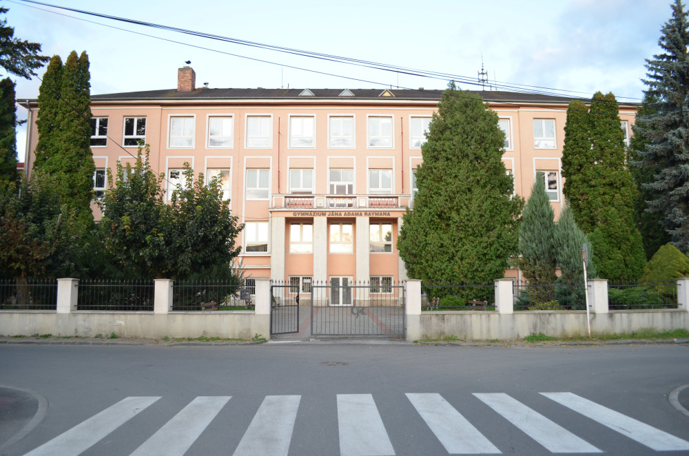

Where did I gain all this wisdom
GJARko (my beloved)

I've been rotting here for 7 whole beautiful years (and counting) and I couldn't praise this place enough. I may be losing my sanity day by day, piece by piece, however Stockholm Syndrome helps me keep moving forward.
My schedule
| 0. | 1. | 2. | 3. | 4. | 5. | 6. | 7. | |
|---|---|---|---|---|---|---|---|---|
| Monday | INF | OBN | MAT | ANJ | SJL | BIO | BIO | |
| Tuesday | SJL | TSV | DEJ | ANJ | MAT | FYZ | NEJ | |
| Wednesday | CHE | NEM | GEG | BIO | MAT | SJL | ||
| Thursday | OBN | SJL | ANJ | MAT | GEG | DEJ | NEJ | |
| Friday | FYZ | CHE | BIO | MAT | ANJ | SJL |
Šmeralka (another miracle)
This is where I spent the first 5 years of my academic life, and I can say that after surviving this, nothing can break me anymore.